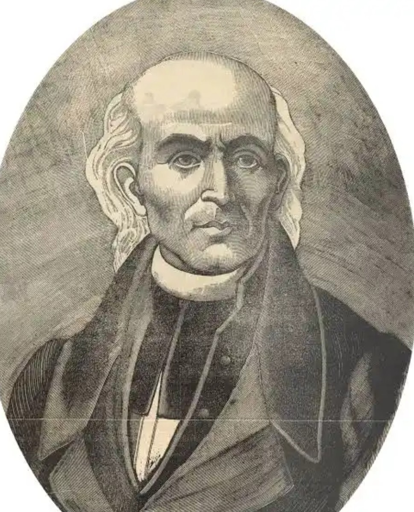
Independencia
La lucha que terminó con el dominio español en 1821.
✦ EXPOSICIÓN HISTÓRICA ✦
Transformaciones políticas, sociales y religiosas del siglo XIX
El siglo XIX fue una época de grandes transformaciones para México. Después de conseguir su independencia de España, el país enfrentó guerras, conflictos políticos, invasiones extranjeras y cambios sociales que definieron su identidad nacional.

La lucha que terminó con el dominio español en 1821.
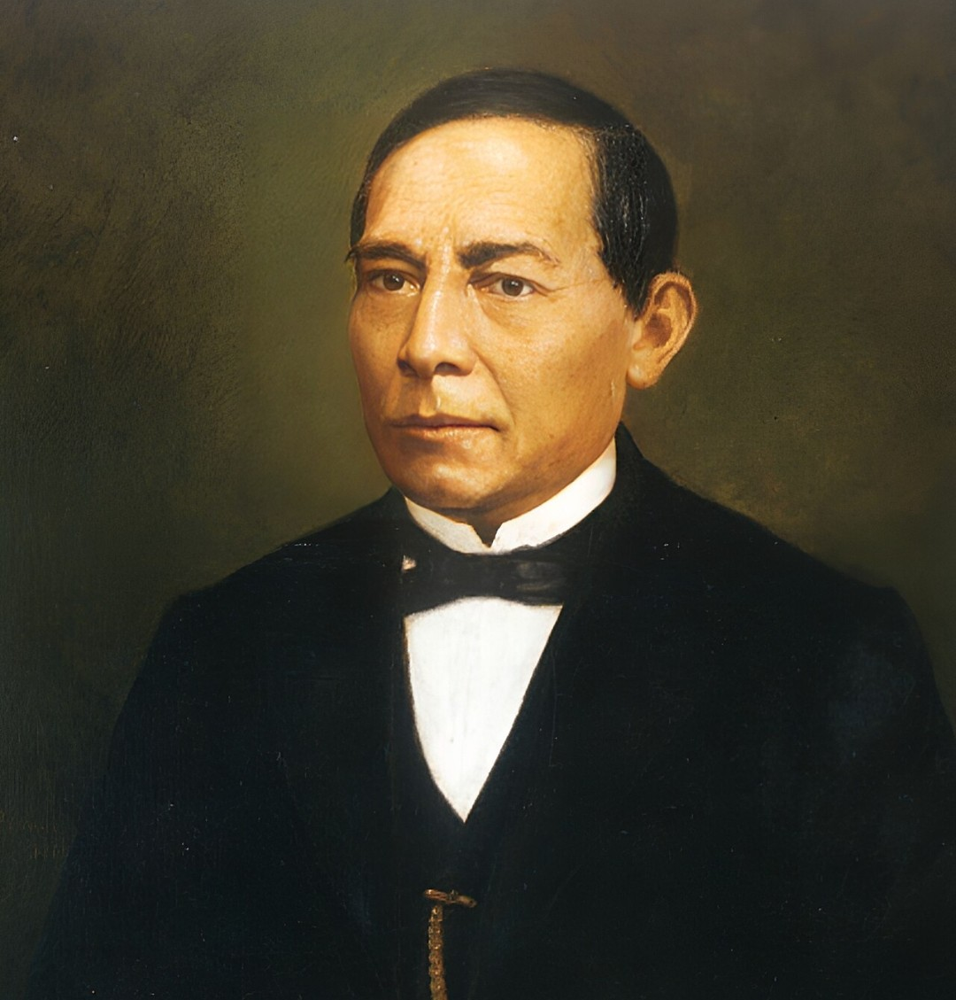
Las ideas que transformaron las leyes y las instituciones mexicanas.
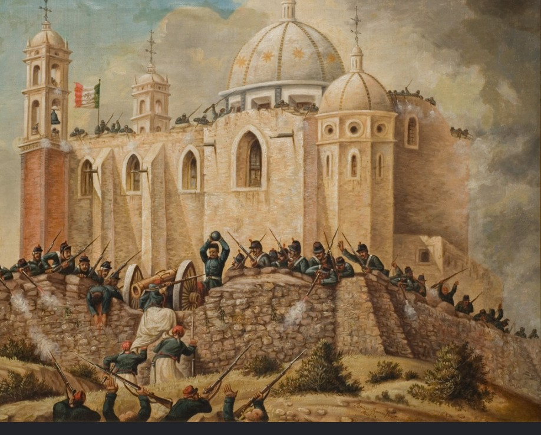
Los conflictos militares contra Estados Unidos y Francia.
La Independencia de México fue un movimiento político, social y militar que comenzó el 16 de septiembre de 1810 y terminó el 27 de septiembre de 1821.
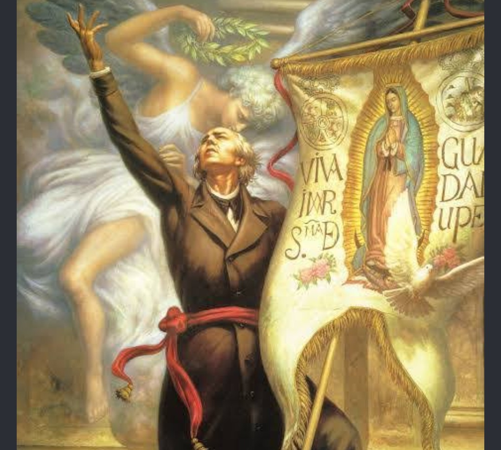
En 1810, Miguel Hidalgo convocó al pueblo de Dolores a levantarse contra el gobierno virreinal.
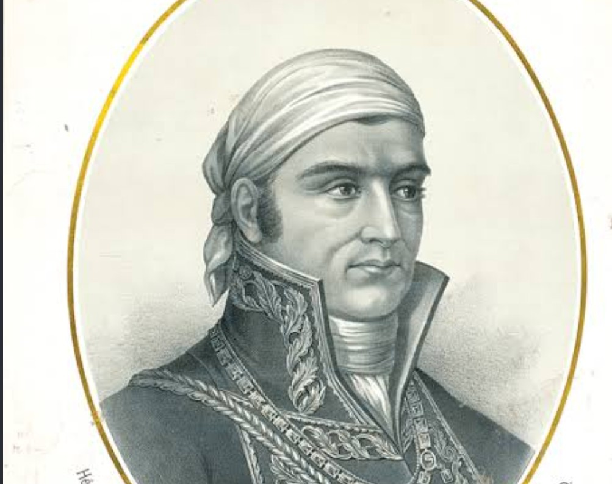
Organizó el movimiento insurgente y presentó los Sentimientos de la Nación en 1813.
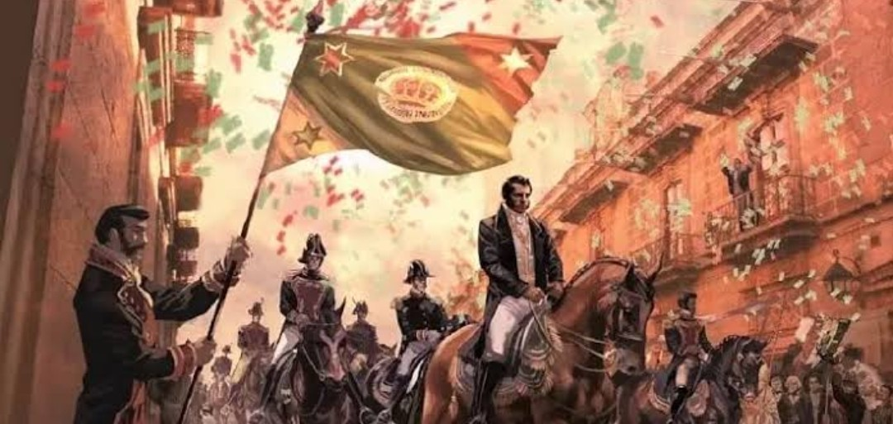
El 27 de septiembre de 1821, el Ejército Trigarante entró a la Ciudad de México.
El liberalismo mexicano defendía las libertades individuales, la igualdad ante la ley, el federalismo y la transformación de las instituciones tradicionales.
Fue una figura principal del liberalismo mexicano. Defendió la República y encabezó importantes reformas.
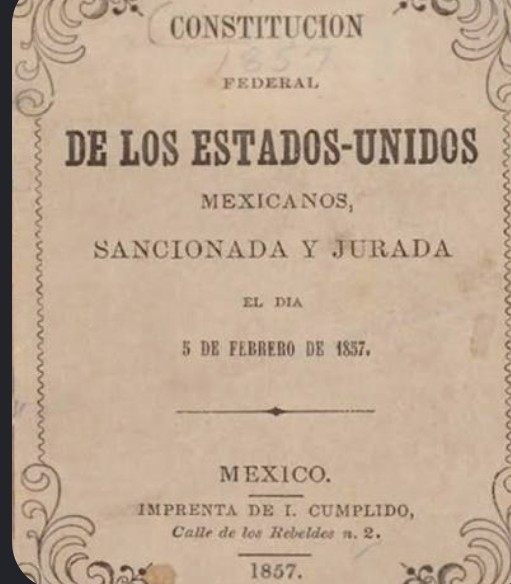
Reconoció garantías individuales, libertad de expresión y la organización federal de la República.
Entre 1859 y 1860 se aprobaron leyes que establecieron el matrimonio civil, el registro civil y la nacionalización de bienes eclesiásticos.
Durante el siglo XIX, México enfrentó intervenciones militares de potencias extranjeras que amenazaron su territorio y su soberanía.
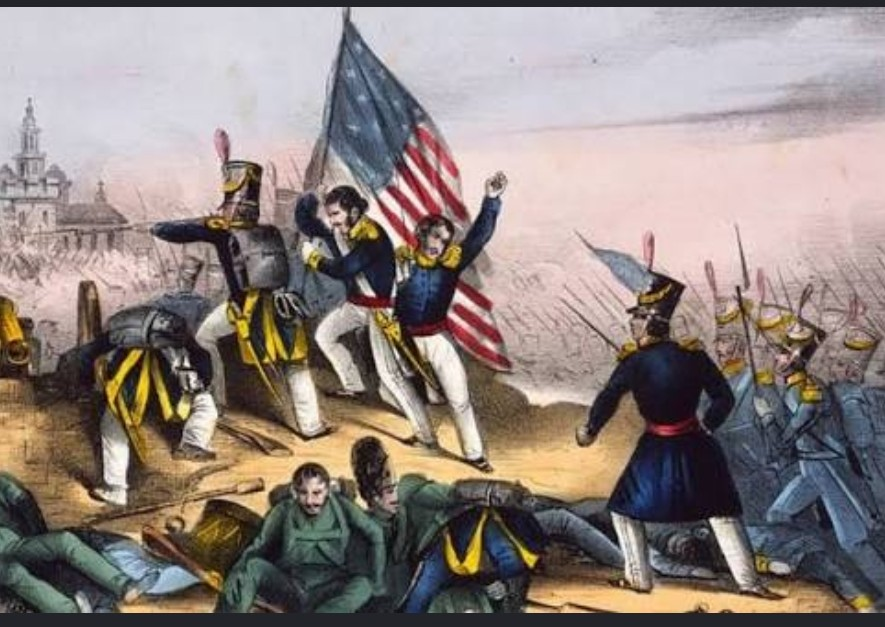
Entre 1846 y 1848 México enfrentó una guerra contra Estados Unidos. El conflicto terminó con el Tratado de Guadalupe Hidalgo y la pérdida de una extensa parte del territorio mexicano.
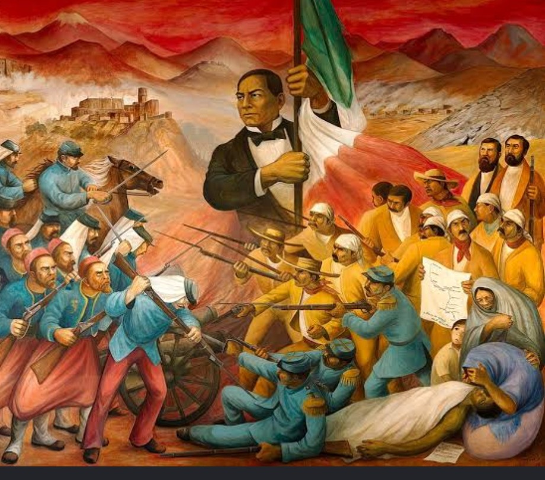
Francia invadió México en 1862. El 5 de mayo, el ejército mexicano obtuvo una victoria en Puebla bajo el mando de Ignacio Zaragoza.
En 1867 terminó el Segundo Imperio Mexicano y Benito Juárez restauró la República.
Durante el siglo XIX, diferentes sectores de la sociedad lucharon por mejores condiciones de vida, defensa de sus tierras, autonomía y justicia.
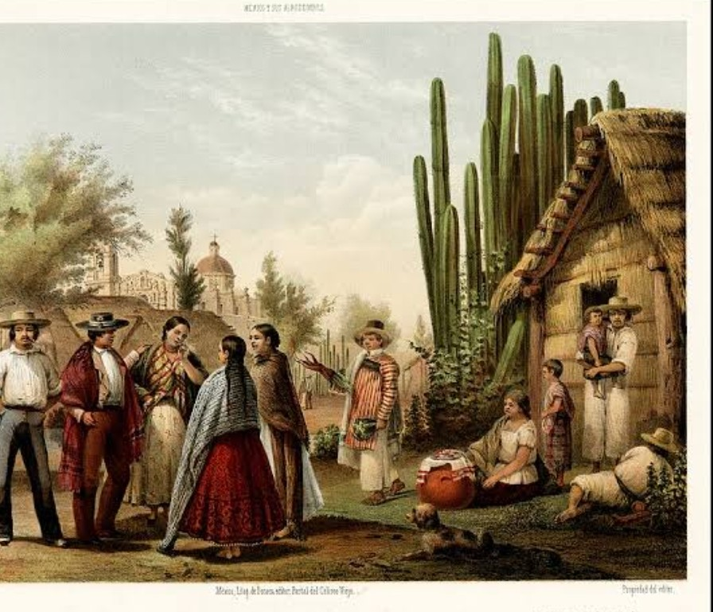
Defendieron sus territorios, recursos naturales y formas tradicionales de organización.
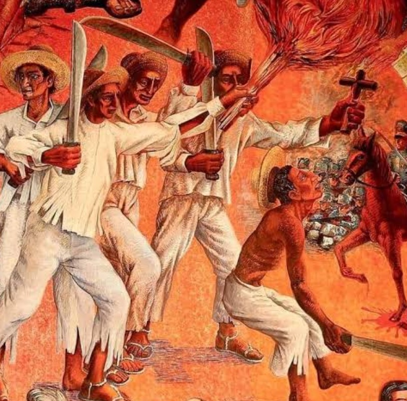
La rebelión maya iniciada en Yucatán en 1847 tuvo sus raíces en desigualdades sociales y conflictos por la tierra.
Los campesinos y trabajadores defendieron sus tierras, recursos, salarios y condiciones de trabajo.
La Iglesia católica tuvo una gran influencia en la sociedad mexicana. Participaba en la educación, la cultura, la asistencia social y la vida cotidiana.
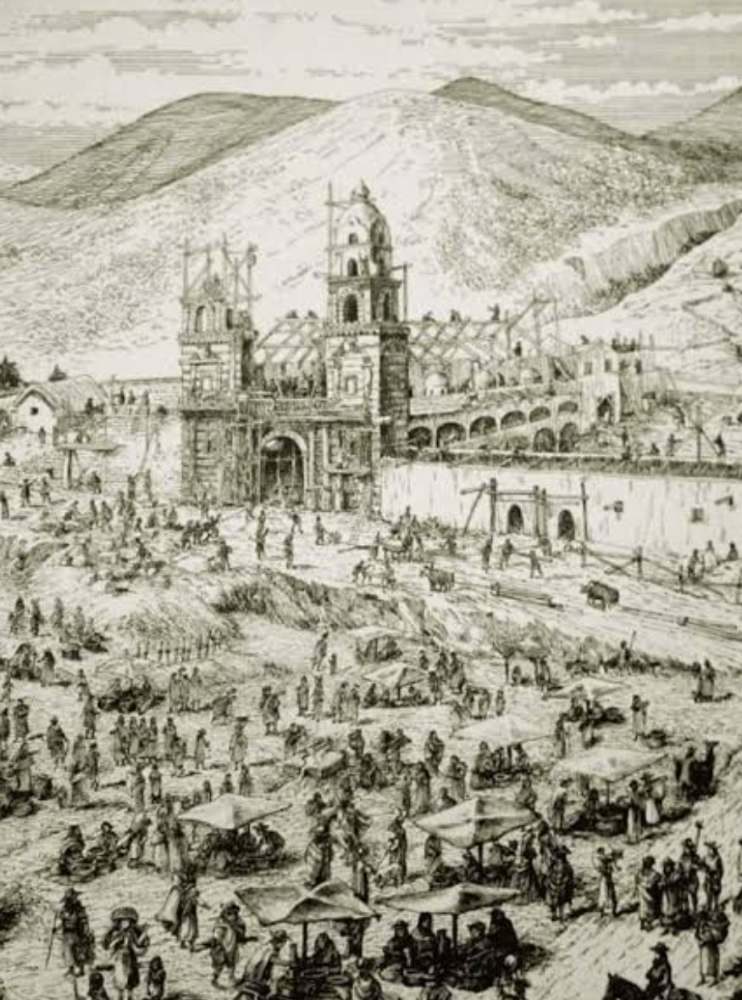
La Iglesia tenía una presencia importante en la educación, las celebraciones y las tradiciones.
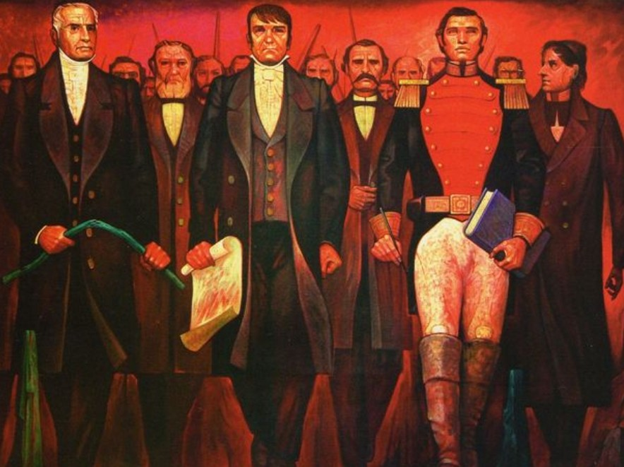
Los gobiernos liberales impulsaron reformas para establecer una mayor separación entre la Iglesia y el Estado.
Las Leyes de Reforma establecieron el matrimonio civil, el registro civil y la libertad de cultos.
Estos son algunos acontecimientos importantes de la historia de México.
| Año | Acontecimiento | Importancia histórica |
|---|---|---|
| 1810 | Inicio de la Independencia | Comenzó la lucha contra el dominio español. |
| 1813 | Sentimientos de la Nación | Morelos presentó sus ideas políticas. |
| 1821 | Consumación de la Independencia | México consiguió su independencia. |
| 1846 | Guerra contra Estados Unidos | Comenzó una guerra por el territorio. |
| 1848 | Tratado de Guadalupe Hidalgo | México cedió una extensa parte de su territorio. |
| 1857 | Constitución liberal | Reconoció garantías individuales. |
| 1862 | Batalla de Puebla | Victoria mexicana frente al ejército francés. |
| 1867 | Restauración de la República | Terminó el Segundo Imperio. |
Completa este formulario para compartir tu opinión sobre los acontecimientos históricos del siglo XIX.
Conoce más sobre el proceso de Independencia de México mediante este material audiovisual.
El video requiere conexión a internet.